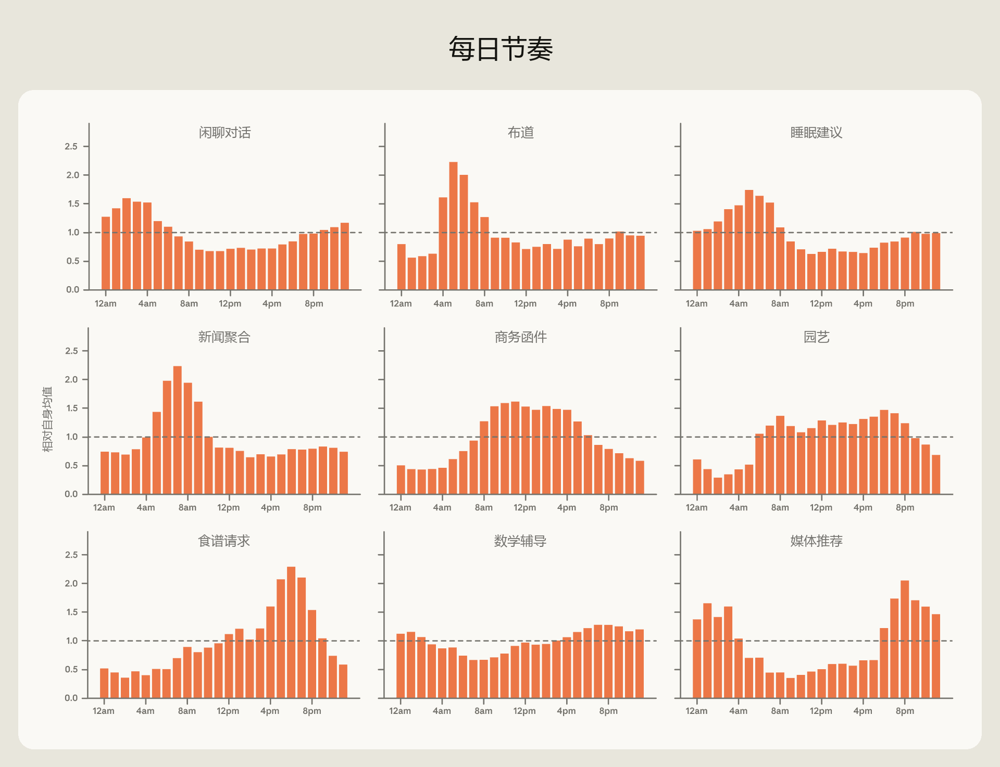
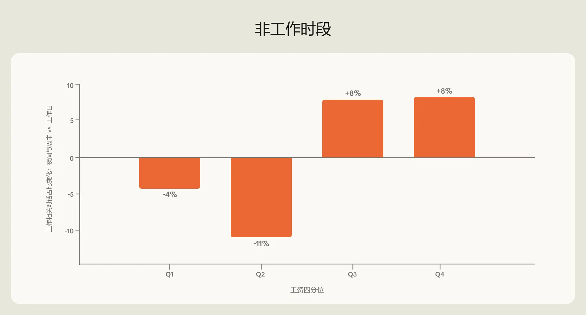
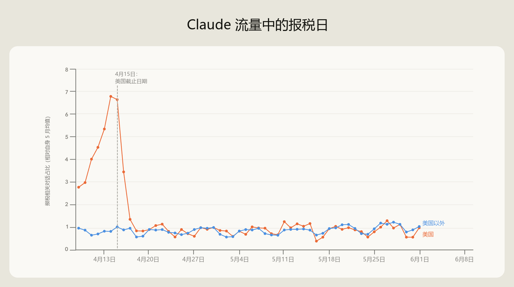
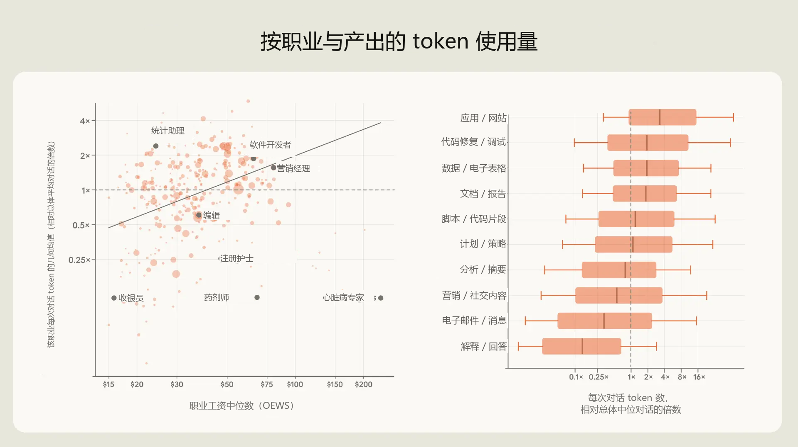
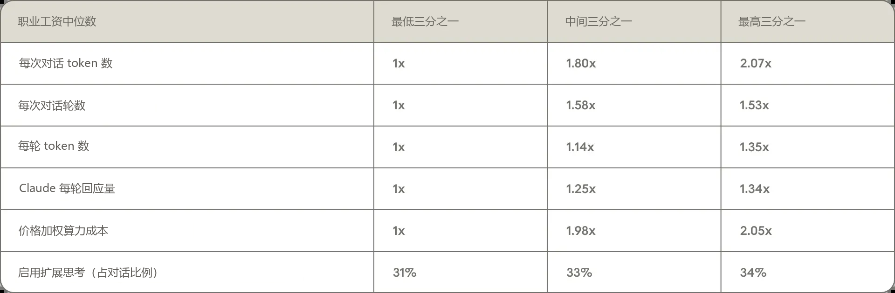
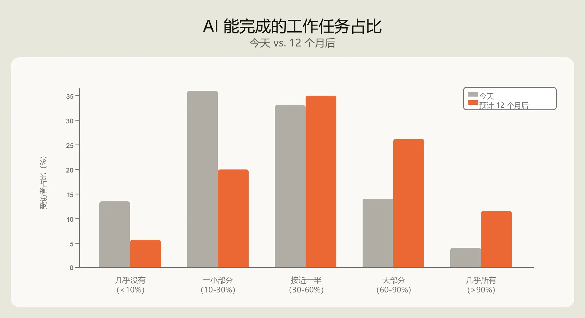
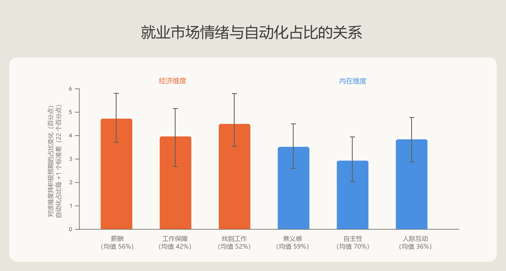
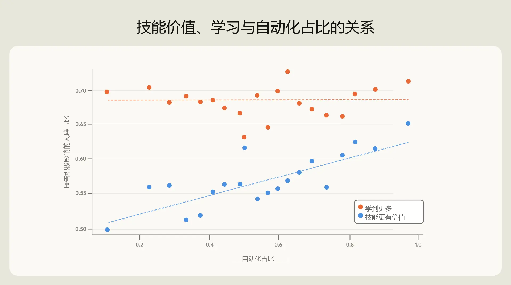
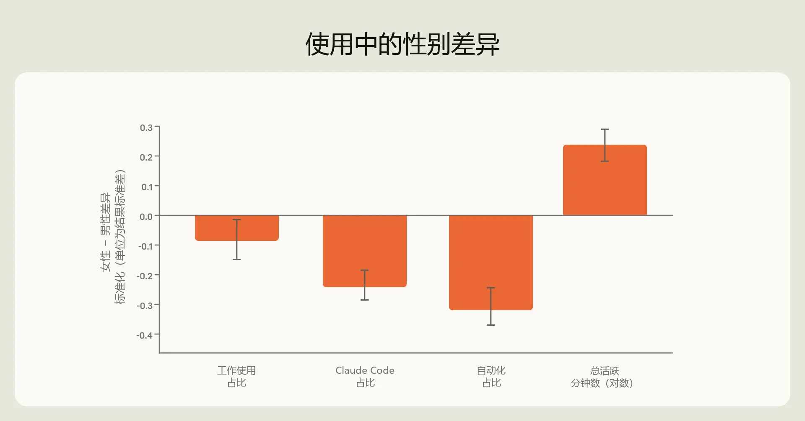

Anthropic 经济指数报告：节律
📖 中文摘要
专业术语注解
token：模型处理和生成文本的基本计算单位（词元）分类器：自动识别对话输出类型或用途的机器学习模型1P API：直接经 Anthropic 自有编程接口接入的开发者流量自主性：任务执行过程中由 AI 独立决策的程度暴露度：一项工作中可由 AI 完成的任务占比自动化与增强：前者指 AI 独立完成任务，后者指 AI 辅助人类工作📄 中文全文
- 类别： 经济研究
- 来源： https://www.anthropic.com/research/economic-index-june-2026-report
经济研究 2026 年 6 月 26 日 阅读 PDF
引言
一年前，大多数 Claude 的使用形式是用户与助手之间的一次对话。随着 Claude Code 和 Cowork 的快速增长，Claude 会话如今越来越多地由长时间运行的智能体任务构成。聊天记录已无法完全反映人们如何使用 AI，我们研究 Claude 经济影响的方法也不得不随之调整。 为了跟上这一变化，我们对经济指数的数据管道进行了几项修改。在本版本中，我们： * 以更高的频率采样数据，使我们能够观察到小时级别的使用模式。 * 引入一个新的分类器，为每次对话的输出打标签。 * 分享更细粒度的数据，将聊天（chat）与 Cowork 对话（合称「Claude 对话」）以及第一方 API（1P API）的结果分开呈现，并按月聚合。¹
我们在附录中描述了其他方法上的调整。这些调整共同描绘出一幅更清晰的图景，展示 AI 如何映照并渗透进经济生活。 此外，我们此前一直无法观察到 Claude 在用户会话_之外_的影响。人们如何看待 AI 正在改变他们的工作或他们可获得的机会？使用 AI 是否塑造了他们的预期？在理想情况下，他们希望 AI 提供什么？我们在此报告自 2026 年 4 月启动的 Anthropic 经济指数调查的初步发现。 我们在下方预览主要发现。 * 在第 1 章中，我们展示外部世界的节奏如何塑造 Claude 的使用。与工作相关的查询在周末减少，但在收入最高的职业中降幅不那么明显；人们倾向于在早上询问新闻，睡眠建议的请求在凌晨 5 点左右达到高峰；报税相关请求在申报截止日期前后激增。
-
第 2 章探讨人们从 Claude 会话中获得的具体产出。这些产出高度依赖他们使用的产品。例如，聊天和 Cowork 提供的解释比 Claude Code 更多。产出的性质也塑造了人们与 Claude 的互动方式。构建网站比翻译文档留给 Claude 更多判断空间——翻译的答案在很大程度上由文本本身决定。我们还发现，更多的算力与更有价值的产出相关；某个产出所消耗的 token 数量随该工作价值的估计值上升。
-
第 3 章呈现 Anthropic 经济指数调查的首批结果，我们通过隐私保护系统将其与 Claude 使用数据关联起来。预期和体验随人们使用 Claude 的方式而系统性变化：以最自动化方式使用 Claude 的人预期 AI 将在未来一年承担更多他们的任务，但同时对这对其工作意味着什么感到最为乐观，预期在薪酬、工作保障和工作意义上都会产生积极影响。
节奏
我们新的隐私保护遥测系统每天持续采样一部分对话，使我们能够研究使用中的日间和小时模式——而此前每期经济指数报告依赖的都是七天样本。这些分析捕捉到了世界各地工作节奏的起伏。² 我们发现 Claude 的使用与工作周同步，个人类提示词在周末飙升。小时级数据捕捉到了日内模式——人们最常在凌晨 5 点左右询问睡眠建议，在下午 6 点左右询问食谱。我们还看到使用情况反映关键日期。例如，报税相关请求在 4 月 15 日美国申报截止日期之前激增。
工作周
在样本期内，被归类为个人使用的聊天和 Cowork³ 对话占比从工作日的约 35% 上升到周末的接近 50%（图 1.1）。在工作周之外，用户的对话从商务函件、营销文案和幻灯片转向情感支持、医疗问题和投资建议。这种转变在高收入国家最为明显。
 图 1.1：个人对话在周末增加
图 1.1：个人对话在周末增加
每日个人使用对话占比，覆盖 Claude.ai、Claude 桌面版、Claude Code 和第一方 API（1P API）。周六和周日以灰色阴影标示。
Claude Code 和第一方 API 流量（即直接通过 Anthropic 路由的 API 流量）中也存在类似的模式，不过两者的个人使用基线占比都较低。⁴ 请求簇（request clusters）⁵ 让我们能够再深入一层，看到哪些具体的 Claude Code 任务在周末与工作日之间波动最大。在周末，占比下降最多的 Claude Code 使用簇包括后端架构、API 调试和数据存储。占比上升最多的包括 AI 智能体设计、量化交易和游戏。 周末也可能为人们开辟探索新事业的空间。在各国中，与创业相关的对话在周六和周日最高。然而，求职申请活动与其他工作相关任务一样在周末下降。⁶
每日节奏 逐小时来看，Claude 的使用反映了日常生活的节奏。图 1.2 显示了不同请求簇相对于其在全球流量中总体均值的小时频率。⁷ 人们在当地时间早上 7 点询问新闻。商务函件（如起草电子邮件）沿着工作日的轨迹起伏，在上午 10–11 点略有高峰。最大的峰值之一是食谱请求，其下午 6 点的频率是平均水平的 2.3 倍。媒体推荐最集中在晚间，而人们在天亮前的几个小时里寻求睡眠建议。

图 1.2：一天中的请求簇不同请求簇对话的归一化小时占比，仅限 Claude 聊天和 Cowork 数据。
在夜间和周末，当人们确实转向 Claude 处理工作时，任务倾向于偏向高薪职业（图 1.3）。虽然我们无法确切识别这些请求者的职业，但这可能反映出高薪职业人群——如营销经理或计算机程序员——更可能在传统工作时间之外工作。相比之下，与收入最低两个四分位职业（如电话推销和文书工作）相关的任务在总对话中的占比下降。这种模式并非仅由计算机和数学类任务驱动：在稳健性检验中，当我们把这些职业从分析中移除后，较高四分位的任务在夜间和周末仍然增加。

图 1.3：夜间和周末工作相关对话占比的变化，按职业工资四分位分组每根柱状图显示指定工资四分位的工作相关任务占比在夜间和周末相对于工作日工作时段的变化百分比。工资四分位基于 BLS 数据计算，并按转录本数量加权。
报税日
本报告样本期覆盖美国民众的报税截止日期。图 1.4 显示报税相关对话占比在截止日期前后出现大幅飙升。4 月 14 日，报税相关簇的出现频率是 5 月平均日的八倍，4 月 15 日仍保持同样高的水平。4 月 16 日则急剧下降。

图 1.4：报税相关对话在美国申报截止日期前激增美国及世界其他地区报税相关对话的占比。
产出
在本章中，我们按产出（artifact）对聊天和 Cowork（以下简称「Claude 对话」）⁸ 中的每次对话进行分类，将其归入 30 多个类别。我们把 Claude 在对话中产生的主要输出——一份文档、一段解释、一段代码、一篇学术论文等，无论是在聊天窗口中呈现还是作为独立文档——称为产出。完整的产出列表见附录。 我们的分类器识别出 93% 的 Claude 对话产生了某种产出（图 2.1）。⁹ 最常见的产出是解释（占对话的 17%）、文档和报告（15%）以及指导建议（11%）。对话式产出（如解释或指导建议）和书面交付物（如文档或演示文稿）各占对话的约三分之一；代码和技术性工作（如应用或脚本）约占六分之一。
 图 2.1：Claude 的输出
图 2.1：Claude 的输出
具有特定输出的对话占比。该图展示 Claude 对话中十二种最常见的输出类型。第一方 API 的构成见附录。
产出是什么并不能告诉你它的用途：同一个产出可能是工作交付物，也可能是个人项目。我们接下来考察这一区分。
每种产出用于什么目的？
我们的一月经济指数报告引入了一种将每次对话分类为工作、个人或课程作业的原始方法。在这里，我们将这一区分应用于 Claude 对话中产生的产出（图 2.2）。
有些产出类别几乎总是个人用途。超过 80% 的创意写作、指导建议和食谱对话被归类为个人用途。在各类别内部，个人用途与工作相关用途可能差别很大。例如，个人创意写作以同人小说、世界观构建和诗歌为主；其中 13% 的工作相关写作主要是短视频脚本、编剧和演讲稿形式。最可能属于工作相关的类别包括创建营销内容（80%）、撰写博客或文章（81%）和编写数据库查询（82%）。
许多产出用于个人和工作目的的可能性相当，包括制定计划或策略（44% 工作相关，49% 个人）或翻译（42% 工作，44% 个人）。例如，最常见的个人规划类产出包括旅行行程和健身计划，而工作相关计划则最多涉及创业或内容策略。
最后，课程作业特征的产出包括撰写学术论文和学位论文、制作教育材料以及与数学相关的查询，不过每一类都有相当一部分同时落入工作和个人两类。
 图 2.2：按用途划分的产出占比
图 2.2：按用途划分的产出占比
具有特定输出的对话占比，按用途分类为工作、个人和课程作业。
我们也可以反转这个问题。与其问每种产出用于什么，不如问工作、个人和课程作业对话各自倾向于产生什么类型的产出。工作对话最常产生文档和报告（20%），其次是解释（9%）、电子邮件草稿（7%）以及分析和摘要（6%）。课程作业对话总体相似，文档和报告同样居首（21%），紧随其后的是解释（20%）、教育材料（11%）和学术论文（6%）。相比之下——毫不意外——个人对话中只有 6% 产生文档。相反，最常见的结果是解释（25%）和推荐（22%）。
成本与工作价值挂钩
产生这些产出需要算力，我们发现算力往往随工作价值增长而增长。我们以 token——即处理和生成的文本量，包括 Claude 的内部推理——来衡量每次对话的计算成本，并通过将每次对话的分类任务映射到通常执行该任务的职业来跨职业比较。在本节中，我们将分析限定于工作相关对话。
图 2.3 左面板显示对话级 token 数中位数与映射职业工资中位数之间的正相关关系。¹⁰ 例如，营销经理的薪酬大约是编辑的两倍（时薪 80 美元 vs. 37 美元），而映射到他们任务的对话消耗的 token 数约为后者的 2.5 倍。诚然，这种关系存在噪声，也有显著离群值。例如，药剂师的收入接近统计助理的三倍（时薪 68 美元 vs. 24 美元），但映射到药剂师任务的对话消耗的 token 数仅为后者的约二十分之一。

图 2.3：高薪职业的对话消耗更多 token左面板：特定职业的工资中位数与分类到该职业某项任务的对话中典型（几何均值）token 数之间的关系，已按总体均值归一化。两个变量均以对数刻度表示。右面板：生成特定产出所用 token 的分布。黑线表示中位数，箱体表示第 25 和第 75 百分位，须线表示第 10 和第 90 百分位。所有数字均按总体 token 中位数归一化并以对数刻度呈现。两个面板的数据均限于聊天和 Cowork，且限于被分类为工作相关的对话。token 计数未针对服务该对话的模型进行调整。
生成不同类型产出所消耗的 token 讲述着类似的故事。更复杂、更有价值的输出往往比更简单的输出消耗显著更多的 token。例如，关于构建应用的对话使用的 token 数超过中位数对话的三倍。在光谱的另一端，一次典型的解释使用的 token 数约为中位数对话的五分之一。token 消耗中工资梯度的约 44% 可由产出构成解释——高薪职业更有可能产生算力密集型产出。 这在经济上为何重要？在映射到高薪职业的对话中，Claude 产出更多（每轮产出量为 1.34 倍），用户参与更多（轮数为 1.53 倍），并且更频繁地启用扩展思考（34% 的对话 vs. 31%；表 2.4）。关键在于，这些是同步变动的：Claude 产出更多并不意味着用户产出更少。如果人类仍然参与最高价值的任务，这种模式看起来更像是劳动增强而非劳动替代。它还表明，在某种程度上，更有价值的产出成本更高。下一节将考察每次对话中有多少决策被委托给了 Claude。

表 2.4：高薪职业中更高 token 消耗的来源导致映射到高薪职业的对话中 token 消耗更高的对话特征。职业按工资中位数分为三等分，并以匹配到各职业的对话数量加权。算力相关指标按最低三等分的几何均值归一化。例如，第一行显示映射到最高三等分职业的典型对话消耗的 token 数是映射到最低三等分职业的典型对话的 2.07 倍。
Claude 能多大程度上自主决策？
我们以 1–5 的等级来衡量这一点，从「无」到「极高」。易于描述或指定的任务涉及很少的自主性：自主性最低的输出是数学或计算、翻译和问答。高自主性任务是那些需要在众多可能选择中做出挑选的任务，例如创建应用和网站、游戏或演示文稿。这类需要持续判断的工作历来难以自动化。通过比较 Claude 聊天和 Cowork 与 Claude Code 的自主性水平，我们表明这种情况正在开始改变。 在几乎所有类型的输出中（所展示的 31 种输出中的 26 种），Claude Code 上的 AI 自主性水平都高于聊天或 Cowork。¹¹ 例如，产生脚本和代码片段的对话在使用 Claude Code 时，其自主性平均比在聊天或 Cowork 上产生相同输出的对话高 0.53 分（在 1–5 等级上）。在所有对话中，自主性的平均差异为 0.37 分，其来源主要有两个。¹² 约三分之二的差异可以用同一任务在 Claude Code 上以更高程度的委托执行来解释。博客文章即为例证：两个平台上其背后的请求和任务相似，但人们与 Claude 协作的方式截然不同。产生博客文章或文章的聊天和 Cowork 对话中位数涉及 13 轮来回交流，而产生博客的 Claude Code 会话中位数仅包含一条人类提示词。剩余的三分之一反映两个平台上输出类型的构成不同。
 图 2.5： 按输出类型划分的 AI 自主性
图 2.5： 按输出类型划分的 AI 自主性
各对话输出和平台的 AI 自主性平均水平。AI 自主性按 1–5 级评定，从「无」到「极高」。
有人可能怀疑这一差异只是反映了模型选择。Claude Code 会话运行在最强大模型上的频率要高得多（54% 由 Opus 提供服务，而聊天和 Cowork 对话仅为 10%）。然而，当我们比较由同一模型服务的对话时，这一差距依然存在。例如，在使用 Sonnet 的对话中，Claude Code 会话的自主性仍然高出 0.26 分，这表明所使用的产品可能比底层模型更重要。
跳出平台比较来看，用户委托程度最高的输出类型也正是消耗算力最多的类型：在各产出之间，平均自主性与 token 使用中位数同步上升（聊天和 Cowork 上 r = 0.68；附录图 A.2）。
Claude 的回答水平高于提问水平
对于每次对话，分类器会估算两个阅读水平——一个是用户提示词的水平，一个是 Claude 回应的水平——用理解该文本所需的教育年限来表示。¹³ 我们发现阅读水平因产出类型而异。产生学术论文的平均查询需要超过 16 年的教育年限，大致相当于本科水平，其中 15% 的对话达到博士水平或以上（20 年或更多教育年限）。在光谱的另一端是产生食谱或指导建议的对话，理解其提示词所需的受教育年限不到 10 年。 总体而言，输出阅读水平较高的产出类型，其提示词阅读水平也较高（跨对话相关系数为 0.87）。然而，我们也观察到，在几乎所有类别中，Claude 输出的理解水平都高于提示词，平均高出约一年受教育年限。在用户描述要构建的内容时差距最大，如图像和图形（+2.6 年）、游戏（+1.9）以及应用和网站（+1.7）。部分差距可能只是语域差异；提示词往往简短随意，而 Claude 倾向于以精炼的散文回应。然而，对于面向受众的写作（博客 −0.1、学术论文 +0.0、电子邮件 +0.3），差距接近于零，这可能是因为这些提示词通常起草的是与预期输出相同语域的语言或源材料。
 图 2.6：用户提示词与 Claude 回应的阅读水平，按产出划分
图 2.6：用户提示词与 Claude 回应的阅读水平，按产出划分
理解用户提示词和 Claude 回应所需的教育年限估计值。仅限聊天和 Cowork。
感知
前两章展示了人们如何使用 Claude，但未深入揭示人们在工作中体验 AI 的方式——他们预期自己的工作和职场将如何变化、他们对 AI 当前和潜在影响的感受，以及他们对这项技术的期望。我们于 2025 年 12 月使用 Anthropic Interviewer 对 81,000 名 Claude 用户的访谈 描绘了一幅图景：受访者报告了巨大的生产力提升，但也表达了对替代的担忧。这些担忧集中在职业生涯早期的员工以及我们观察到 Claude 承担最多工作的职业。¹⁴ 2026 年 4 月，我们启动了 Anthropic 经济指数调查，以在此基础上继续推进。该调查使我们能够直接询问人们关于 AI 与工作的体验，并探索回答如何随 Claude 使用情况而变化。我们使用隐私保护方法将调查回答与 5 月中旬至 6 月初的使用数据关联起来。为刻画每位受访者的使用模式，我们在此时间窗口内随机抽取每人最多 20 个会话（覆盖 Claude.ai、Cowork 和 Claude Code，使会话构成反映每个人跨平台的典型使用情况）。我们剔除会话数少于五个的受访者以减少抽样噪声。最终关联样本包含约 9,700 名调查受访者。 我们发现大多数受访者预期 AI 将在未来一年取得显著进步。虽然人们对 AI 能力的感知取决于他们的经验、居住地以及其工作暴露于 AI 的程度，但他们对于未来进步速度的预期却惊人地一致，这与「水涨船高」的图景相符，即 AI 能力全面改善。 对于这种进步对其自身职业意味着什么，看法则不那么一致。职业生涯早期的员工报告说 AI 能完成他们工作中最高比例的部分，并对失业表达最多的担忧。然而——与一种常见担忧相反——向 Claude 委托最多的人对自身未来劳动力市场结果_最为_乐观，并感到自己的技能价值在增长。而且，尽管（或许正因为）接近 AI 的前沿，受访者对未来十年的平均期望并非替代，而是协作。他们希望 AI 能保留有意义的工作、自动化琐碎的苦差事，并希望 AI 带来的收益能被广泛分享。
谁回应了经济指数调查
经济指数调查并不代表总体人口。我们覆盖的是 Claude 用户的随机样本，谁完成调查可能存在选择性，而且我们在分析中过滤掉了不常使用的用户。图 3.1 显示了调查受访者的职业构成（橙色）以及美国就业人口（灰色）。计算机和数学类职业的代表性过高最为严重，约占受访者的 30%——与其在 Claude 使用中的占比相当，但远高于其在美国就业人口中 4% 的占比。管理层占受访者的 23%，¹⁵ 相对于其 7% 的就业占比也严重偏高，尽管它只占会话的 4%。这一差距与管理层将 Claude 用于管理本身以外的任务一致：在调查中，判断力和管理被许多受访者（尤其是经验更丰富的受访者）列为 AI 所缺乏的能力。交通运输及物料搬运、食品制备及餐饮服务相关、建筑及开采等体力职业类别在调查中的代表性不足，在 Claude 会话中也是如此。
 图 3.1：与美国的就业结构相比，调查受访者严重偏向计算机与数学以及管理类职业
图 3.1：与美国的就业结构相比，调查受访者严重偏向计算机与数学以及管理类职业
在 22 个主要 SOC 职业组¹⁶ 中报告其职业的受访者占比，与来自 OEWS 的各职业在美国就业人口中的占比对比。
AI 与工作任务
关于 AI 影响的研究往往聚焦于职业暴露度（occupational exposure），即某一特定工作中的任务有多大比例可以用 AI 完成。在先前的工作中，我们构建了一个_观测暴露度_指标，捕捉我们已经看到由 Claude 完成的职业任务占比。我们将其与一种常用的理论暴露度指标（即大语言模型理论上能完成的职业任务占比）进行了比较。 理解职业暴露度的另一种方式是直接询问人们 AI 能完成他们工作的多大比例。我们询问受访者，AI 今天能完全独立完成他们多大比例的工作任务（以下称为_报告暴露度_），以及他们预期 12 个月后这一比例会是多少（预期暴露度），并提供从「几乎没有」到「几乎所有」的五个区间供选择。近六成受访者对未来一年的选择高于当下。超过三分之一的人预期明年 AI 能完成他们大部分或几乎全部工作任务（图 3.2）。

图 3.2：大多数受访者预期 AI 能完成的工作任务占比将在未来 12 个月内增长该图展示了受访者所说 AI 今天与 12 个月后能完成的工作任务占比分布。
图 3.3 将报告暴露度和预期暴露度与观测暴露度和理论暴露度进行比较。我们考察：人们报告和预期的 AI 能力是否与跨职业的观测暴露度和理论暴露度指标一致，以及职业在观测或理论暴露度上得分较高的受访者是否预期来年进步更快。对于第一个问题，答案是肯定的：报告暴露度（灰点）与观测暴露度和理论暴露度均呈正相关。对于第二个问题，答案是否定的：报告暴露度和 12 个月后预期暴露度的最佳拟合线（橙点）基本平行，这意味着观测或理论暴露度高的岗位从业者与暴露度较低的岗位从业者，对来年 AI 能完成其工作任务占比的_增幅_预期大致相同。¹⁷ 换言之，软件工程师和建筑经理预期各自职业领域内会有大致相同的进步幅度。 同样值得注意的是，报告暴露度系统地高于观测暴露度。一种解释是，并非每个人都执行某个职业中的所有任务，而我们的调查不成比例地触达了更多使用 AI 的人。¹⁸ 类似地，由于理论暴露度是可能性的上限而非当前使用情况的度量，理论暴露度系统性地高估了报告暴露度。
 图 3.3：报告暴露度和预期暴露度与其他指标的对比
图 3.3：报告暴露度和预期暴露度与其他指标的对比
人们所说 AI 今天能完成的任务占比（报告暴露度，灰色）和 12 个月后能完成的占比（预期暴露度，橙色），分别与观测暴露度（左面板）和理论暴露度（右面板）对照。每个点代表一个职业，样本量较小的职业与暴露度相近的职业合并以保证隐私。报告暴露度和预期暴露度按受访者所选区间的中点计算。
我们还考察了对 AI 当前和未来能力的感知如何与受访者的特征和使用模式相关。图 3.4 左面板显示，对 AI 能力的感知与国家 GDP 呈负相关：¹⁹ 高收入国家的人们报告 AI 现在能为其完成的任务平均占比大约低 10 个百分点。这一模式与以下可能性一致：即使职业级暴露度指标（在发达经济体往往更高）暗示相反，AI 在低收入国家工人日常执行的更大比例任务上充当了替代品。事实上，IMF 曾指出，虽然发达经济体总体上面临更广泛的 AI 暴露，但低收入国家的工人可能更难获得让 AI 增强而非替代其工作的互补技能和基础设施。在更早的工作中，我们记录到即使对任务构成的差异进行调整，低收入经济体也倾向于以更自动化的方式使用 Claude。 中间面板显示，报告暴露度和预期暴露度也与工作年限呈负相关。²⁰ 至少有 15 年经验的人所报告的 AI 能完成的任务占比，比工作第一年的人低约 10 个百分点。我们发现证据表明，这可能是因为经验丰富的工人积累了难以被 AI 模仿的隐性或情境特定专业知识。在后续问题中，我们询问人们他们认为 AI 永远无法完成什么任务及其原因；最常见的回答强调，AI 缺乏其工作所需的判断力、情境意识和情境推理。受访者——尤其是那些至少有 15 年经验的受访者——还指出其工作的关系性和人际维度——建立信任和管理人员——是 AI 无法复制的。 与职业对 AI 的暴露度一样，我们发现对未来 AI 能力提升的感知与人均 GDP 和工作年限基本不相关。对 12 个月后 AI 能完成的任务占比的预期一致地高于对 AI 当前能力的感知。
 图 3.4：报告暴露度和预期暴露度在高 GDP 国家和经验更丰富的工人中更低，并随自动化 Claude 使用增加而上升
图 3.4：报告暴露度和预期暴露度在高 GDP 国家和经验更丰富的工人中更低，并随自动化 Claude 使用增加而上升
报告暴露度和预期（12 个月）暴露度，分别对照国家人均工作年龄成年人 GDP（左）、工作年限（中）和被分类为自动化的 Claude 会话占比（右）。
接下来我们考察人们与 Claude 的互动方式与其当前对 Claude 能力的感知之间的关系。与以往报告一样，我们区分与 Claude 协作的「自动化」和「增强」两种模式。当 Claude 被要求以很少或没有用户输入的方式完成任务时，我们将对话识别为自动化。具体而言，自动化占比是指其模式为「指令式」（如「翻译这份文档」）或「反馈循环」（如「修改这封电子邮件……让它更随意些」）的对话占比。²¹ 图 3.4 右面板显示，报告暴露度和预期暴露度随自动化占比上升。这可能是因为委托本身就传递了能力信息——将整个任务交给 AI 的人能直接观察到 AI 能独立完成什么——也可能是因为那些已经相信 AI 能完成其工作的人最愿意将其交出。当我们用工作相关任务会话占比或 Claude Code 会话占比替代自动化占比时，模式保持不变。²²
AI 与就业
我们还询问人们认为自己的工作在未来 12 个月将如何变化。超过三分之一的受访者表示，职责发生重大变化的可能性为「可能」或「很可能」（针对他们自己、同级同事、初级同事和高级同事分别作答）。10% 的人认为自己失业的可能性为「可能」或「很可能」。这略低于美国失去工作的年化风险率；²³ 然而，由于我们的受访者偏向稳定就业的知识工作者（这一群体在基准水平上面临的离职风险可能低于平均水平），这可能仍表明感知风险升高。当被问及是什么驱动了他们的预测这一开放式问题时，在认为自己失业可能或很可能的受访者中，38% 将其预测归因于 AI。²⁴ 值得注意的是，受访者平均对他人失业的担忧超过对自己失业的担忧。²⁵ 受访者尤其担心初级同事失业，超过三分之一的人表示初级同事在未来一年内失业的概率超过 60%。受访者对低收入国家（所有人）的失业也更为担忧。
 图 3.5：报告工作职责将发生重大变化或人们将非自愿失业的可能性为「可能」或「很可能」的人群占比
图 3.5：报告工作职责将发生重大变化或人们将非自愿失业的可能性为「可能」或「很可能」的人群占比
报告工作职责可能发生变化（左面板）或某人可能失去其想保住的工作（右面板）的受访者占比，分别针对自己、同级同事、初级同事或高级同事。
以更自动化方式使用 Claude 的人是否也更担心失去工作？我们考察人们关于 AI 在未来一年对工作六个维度的预期影响的说法：薪酬、工作保障、找到新工作的能力（经济维度）以及意义感、自主性和人际互动（内在维度）；并研究这些预期如何随 Claude 使用的自动化占比而变化。 在所有六个维度上，自动化会话占比更高的人，对 AI 明年对其工作结果的影响感觉_更乐观_，相比以更增强方式使用 Claude 的人。我们在对未来薪酬和找到工作能力的积极影响预期上看到了最大的效应。²⁶

图 3.6：在自动化程度更高的 Claude 用户中，报告 AI 对工作质量的经济和内在维度产生积极预期影响的人群占比更高该图展示了对「人们是否预期 AI 对工作质量的六个维度产生积极影响」这一指标进行线性回归所得的系数估计值，自变量为归一化的 AI 自动化占比。
一个自然而然的问题是，为什么自动化使用与情绪会同步变动。这种关系有可能由选择性解释：对 AI 最热衷的人也最愿意把整个任务交给它。我们不能完全排除这一点，但当我们控制了用户在 Claude.ai 上的使用时长——我们可以将其视为热情程度的代理，因为它区分了早期与较晚期的采用者——这些估计值没有发生有意义的改变。 另一种可能是，以更自动化方式使用 AI 的人今天就能体验到更多它的好处。与我们的先前发现一致，绝大多数人报告在工作的速度、范围和质量方面获得了生产力提升（分别为 86%、82% 和 69%），而 27% 的人报告通过节省原本需要购买的服务成本获得收益。 除了显著的生产力提升，大多数人还报告通过 AI 学到了更多（68%），并觉得 AI 让他们的技能变得更有价值（57%）。图 3.7 显示了这两个结果如何随自动化会话占比变化。我们看到，报告 AI 正在提高其技能市场价值的人群占比随自动化占比上升，而报告自己学到更多的人占比大致持平。 关于委托，一个常见的担忧是把整个任务交给 AI 意味着外包思考，产出的增加以学习和技能退化为代价。我们在这里没有看到这种模式：委托更多的人也报告与其他所有人相同的学习率。然而，这些都是自我评估，而且技能即使在变得更有价值、即使有人报告学到更多的情况下也可能退化，因此数据并不能排除技能退化。

图 3.7：报告技能获得积极预期回报的人群占比随自动化占比上升，而报告学到更多的人占比持平该图展示了任务自动化占比与报告 AI 提高其技能市场价值的人群占比（蓝色）以及使用 AI 时学到更多的人占比（橙色）之间的关系。
不同性别之间的使用差异
到目前为止，我们探讨了使用模式与预期和行为之间的关系。接下来，我们研究_谁_在以各种方式使用 Claude。最显著的差异是按性别划分的。女性仅占我们关联受访者样本的 12%，她们使用 Claude 的方式与男性不同。即使在考虑职业差异之后，她们使用 Claude 处理工作的可能性也略低，她们在 Claude Code 中的会话占比低 0.24 个标准差（6.3 个百分点），自动化占比低 0.33 个标准差（7.3 个百分点）。相反，女性倾向于更迭代地使用 Claude，她们在聊天上的活跃时间比男性更长，这是更协作式参与的信号。²⁷

图 3.8：即使在控制职业差异后，女性也有明显不同的使用模式该图展示了女性与男性相比的使用模式。每根柱状图是女性与男性在该使用指标上的平均值之差，控制职业（SOC 子组）后，以结果的标准差表示。须线显示 95% 置信区间。样本限于自我认同为女性或男性的受访者。女性的 Claude Code 和自动化占比显著更低，而总活跃分钟数更高。
人们对 AI 转型后的经济有何期望？
Anthropic 经济指数调查呈现了人们对 AI 积极与消极体验和情绪的交织，但我们以充满希望的方式结束调查。最后一个开放式问题要求受访者「大胆想象：你希望十年后一个由 AI 塑造的经济是什么样子？」我们让分类器对每份调查回答进行标记，标出相关的主题。下面展示最常被提及的前五大主题。每个主题的更多描述见附录。
 图 3.9：人们期望人机协作、琐事自动化和更多自由时间，以及 AI 带来的经济收益被广泛分享
图 3.9：人们期望人机协作、琐事自动化和更多自由时间，以及 AI 带来的经济收益被广泛分享
该图展示了人们对「你希望十年后一个由 AI 转型的经济是什么样子」这一开放式问题回答中最常见的五大主题。
最常被表达的主题是 AI 对工作的_增强_。超过一半的受访者表达了某种形式的愿望：与 AI 协作完成有意义的工作、希望自己的职业仍然重要，以及/或者希望出现新产业并创造新的就业机会。与此同时，略超过一半的受访者希望 AI 实现_自动化_——具体来说是自动化他们工作中枯燥的部分——以便他们有更多自由时间和更多工作之外的意义空间。第三常见的主题由约三分之一的受访者表达，是共享繁荣：希望 AI 带来的经济收益被广泛分享。
讨论 AI 正在迅速扩散到整个经济中，覆盖越来越多的平台，产出越来越智能。在早期的 AI 聊天界面中，使用很简单，局限于聊天窗口内，没有网络搜索、工具调用、产出或其他功能。如今，Claude 模型可以通过 Claude Code 和 Cowork 自主运行数小时。随着这些形式的变化，用户群体也在转变。早期采用者高度技术化。我们最新的用户将 Claude 应用于劳动力市场上工资较低的任务。 在本报告中，我们采取了几个步骤来推动更具信息量的度量。首先，我们开始以越来越高的频率进行测量，按小时样本处理数据。这揭示了日常生活的节奏如何刻印在我们的使用日志中，并为未来的研究开辟了途径。其次，我们开始记录产出，即人们从 Claude 获得的结果。这使 Claude 的工作输出更加清晰可读，并呈现出一些直观的模式。 最后，使用数据所能承载的信息是有限的。我们的调查使我们第一次能够直接询问人们如何使用 AI 以及他们对它的感受。我们发现，我们的调查受访者对 AI 的使用超出我们的预期——他们报告 AI 能完成其工作的比例高于其职业的观测暴露度指标所暗示的水平。在被要求预测来年的能力时，超过 35% 的人预测 AI 将能完成他们工作的_大部分_。 准确分类 Claude 所做的工作将始终是一个移动靶。例如，随着 AI 能力的提升，AI 之间可能越来越多地相互交互和交换，其方式或许是人类或简单分类器难以理解的。归根结底，Claude 对经济的影响将像体现在其使用日志中一样，体现在就业和生产力等经济总量中。尽管如此，AI 很可能在其承担工作最多的领域产生最早的影响，因此揭示这些不断变化的使用模式仍将是告知公众的一个关键途径。
附录
可在此处获取。
引用
@online{anthropic2026aeiv6,
author = {Maxim Massenkoff and Eva Lyubich and Szymon Sacher and Zoe Hitzig and Shaoyi Zhang and Ryan Heller and Peter McCrory},
title = {Anthropic Economic Index report: Cadences},
date = {2026-06-26},
year = {2026},
url = {https://www.anthropic.com/research/economic-index-june-2026-report},
}
作者
Maxim Massenkoff、Eva Lyubich、Szymon Sacher、Zoe Hitzig、Shaoyi Zhang、Ryan Heller、Peter McCrory。
致谢
Scott Booth、Keir Bradwell、Meredith Callan、Dexter Callender III、Boris Cherny、Chris Doenlen、Eleanor Dorfman、Jake Eaton、Evan Frondorf、Deep Ganguli、Romello Goodman、Ankit Gupta、Kunal Handa、Rebecca Hiscott、Andrew Ho、Hanah Ho、Jerry Hong、Saffron Huang、Mo Julapalli、Katie Kennedy、Jennifer Martinez、Miles McCain、Kelsey Nanan、Tyler Neylon、Adnan Pirzada、Dianne Penn、Kerry Persen、Sarah Pollack、Ankur Rathi、Santi Ruiz、David Saunders、Ankit Siva、Michael Stern、Ami Vora、Scott White、Heather Whitney、Kim Withee、Ryan Zauk、Jack Clark。
脚注
- 这包括 Claude.ai 和 Claude 桌面应用中消费者（Free/Pro/Max）账户的聊天对话和 Cowork 会话。「第一方 API」（1P API）指直接通过 Anthropic 自有编程接口路由的开发者流量，它与 Anthropic 面向消费者的 Claude.ai 应用以及 Amazon Bedrock 或 Google Cloud Vertex 等第三方平台都不同。我们继续按照隐私和保留政策管理数据，我们的分析符合我们的条款、政策和合同约定。
- 全文所有分析均基于隐私保护分类器：转录本只能由另一个 Claude 实例读取。然后我们过滤掉观测不足的任何单元，以确保隐私保护的分析。
- 这包括 Claude.ai 和 Claude 桌面应用中聊天和 Cowork 标签页内进行的所有对话。Claude Code 和 API 流量单独呈现。
- 「第一方 API」（1P API）指直接通过 Anthropic 自有编程接口路由的开发者流量，它与 Anthropic 面向消费者的 Claude.ai 应用以及 Amazon Bedrock 或 Google Cloud Vertex 等第三方平台都不同。它不包括 Claude Code。
- 参见我们的 Sonnet 3.7 报告和附录。
- 我们将创业活动定义为详细请求簇为创业、副业创想、融资、创作者变现、电子商务、商业模式、医疗保健业务、社会企业或活动业务的对话占比。简历活动是指产出分类器将输出分类为简历或求职申请的对话。
- 一天中的时刻基于从对话的 IP 地址推断出的所在地。
- 本章数据涵盖 2026 年 4 月 10 日至 6 月 10 日采样的聊天和 Cowork 对话。在自主性讨论进行平台比较时，会包含同一时期的 Claude Code 会话。工资数据来自 BLS OEWS 2025 年 5 月发布。
- 「无」是对话未产生突出具体输出的兜底类别。这可能包括简短或中断的交流、导致错误的情况，或 Claude 提出澄清问题而用户没有继续的情况。
- 我们对对话级 token 计数使用几何均值，因为该变量呈极度右偏——少数对话消耗的 token 数比「典型」对话高出几个数量级。如果使用中位数，或按各自成本对 token 加权以考虑所用模型的构成，两者关系非常相似。存在一些显著例外，包括医生类职业。
- 关于 Claude Code 的更完整图景，参见我们的配套报告。
- 最大的例外是数据和电子表格，其中聊天和 Cowork 对话的自主性高于 Claude Code（3.09 vs. 2.74）。这主要是构成性的：约 70% 的差距反映任务构成不同。在聊天和 Cowork 上，这类产出偏向财务建模和仪表板，由 Claude 设计结构；在 Claude Code 上则偏向结构化提取和打标签，规格说明精确。数据和电子表格工作既过度代表又特别自主的 Cowork，占聊天和 Cowork 升幅的一部分。
- 用于此分类的提示词详情参见我们三月报告的附录。
- 在我们用户群之外，Anthropic 公共记录——一项对超过 50,000 名美国人进行的全国代表性调查——产生的更结构化调查数据中也存在类似模式。
- 在职业被编码为管理的受访者中，48.1% 表示受雇于公司，24.4% 表示是拥有雇员的企业主，21.7% 表示是自雇或承包商。其余目前未就业，报告的是他们最近的职业。
- 不含军人。
- 由于回答是分箱的——因此最低可能编码回答大于零，最高可能回答小于一——本图中的斜率偏向于零。因此，我们对斜率比较作定性解读，而非精确估计。然而，这些模式（正斜率且线基本平行）在改用「报告 AI 能完成至少 60% 工作任务」这一指标（不受中点编码影响）来估计关系时依然稳健。
- 分箱回答量表可能也起作用：由于中点编码将报告的任务占比从极端值拉回，即使不存在任何实质性差异，观测暴露度在暴露度最低的职业中也往往显得低估了 AI 的能力，而在暴露度最高的职业中显得高估。
- 工作年龄成年人 GDP 的构建方式与 Anthropic 经济指数相同，工作年龄人口估计使用世界银行 WDI（2024）和联合国世界人口展望（2024），GDP 使用IMF 世界经济展望（2025 年估计）。
- 我们询问调查受访者在其当前或密切相关岗位上拥有的工作年限。
- 协作模式分类器将转录本映射到以下互动模式之一：
- 指令式：人类以最少的互动将完整任务执行委托给 AI
- 反馈循环：人类与 AI 进行迭代对话以完成任务，人类主要提供来自环境的反馈
- 任务迭代：人类与 AI 进行迭代对话以完成任务，人类对 AI 输出进行完善
- 学习：人类寻求理解和解释，而非直接完成任务
- 验证：人类使用 AI 检查或验证自己的工作
- 工作占比和 Claude Code 占比都与自动化正相关：Claude Code 是一种智能体工具，其会话平均比聊天或 Cowork 上的会话更自动化，工作会话也同样比个人会话更偏向自动化。工作用途也直接相关——调查问的是工作任务，因此为工作使用 Claude 的人可能在机械上预期它能完成其更大比例的工作任务。对这些指标进行条件控制会削弱自动化占比与任务占比（今天、12 个月后及变化量）之间的关系，但三者仍均为正且统计显著。
- 美国裁员和离职率（BLS JOLTS，全部非农、经季节调整）在截至 2026 年 4 月的 12 个月中平均约为就业人数的每月 1.1%，折合年化约 13.4%，因此 10% 略低于非自愿离职事件的实际年发生率。
- 该问题与工作变化预测和失业预测一并询问。因此 38% 是将自己的失业预测归因于 AI 的人群占比的上限。
- 这反映了一种熟悉的模式：人们对自己处境的评价优于对他人处境的评价。新冠期间也观察到了类似现象，当时自我报告的财务状况超过了对国民经济的看法。
- 这与国家 GDP 和经验形成对比：GDP 和经验较低与较高的任务占比（如图 3.4 所示）_以及_较高的失业概率陈述相关。
- 虽然这可能是聊天/Cowork 与 Claude Code 之间替代的结果，但即使在控制 Claude Code 会话占比后，该模式依然成立。这些模式在控制职业固定效应后也依然成立。
相关内容
进一步了解 Claude 的数学能力
一个未发布的研究版 Claude 在与黎曼猜想相关的问题上取得了进展。它改进了黎曼 zeta 函数满足该猜想的零点比例的长期下界，将其从 41.6% 提高到 67.2%。 阅读更多
用 Claude 发现密码学弱点
密码算法。第一次攻击显著削弱了 HAWK——一种为未来量子计算机能够破解现有标准的世界而构建的数字签名方案。第二次攻击确定了一种攻击轮数缩减 AES（使用最广泛的对称密码）的新方法。 阅读更多
Project Pilot：AI 能控制无人机吗？
我们与 Andon Labs 合作，开发了一系列评估 AI 模型使用飞行无人机能力的新测试，最终形成了一个新基准：Drone-Bench。 阅读更多
▸ 英文原文（点击展开）
Anthropic Economic Index report: Cadences
- Category: Economic Research
- Source: https://www.anthropic.com/research/economic-index-june-2026-report
Economic Research
Anthropic Economic Index report: Cadences
Jun 26, 2026 Read in PDF
Introduction
One year ago, most Claude usage took the form of a conversation between a user and an assistant. With the rapid growth of Claude Code and Cowork, Claude sessions now increasingly consist of long-running agentic tasks. Chat transcripts no longer fully capture how people are using AI, and our methods for studying Claude’s economic impacts have had to adapt. To keep pace, we made several changes to our data pipeline for the Economic Index. In this version, we: * Sample data at a higher rate, allowing us to view usage patterns down to the hourly level. * Introduce a new classifier that labels the output of each conversation. * Share more granular data, breaking out results for chat and Cowork conversations (together, “Claude conversations”) and the 1P API, aggregated at a monthly level.1
We describe additional methodological changes in the Appendix. Together, these changes provide a clearer picture of how AI mirrors and diffuses into economic life. In addition, we’ve previously lacked visibility into Claude’s impact outside of user sessions. How do people perceive AI to be changing their work, or the opportunities available to them? Does their usage of AI shape their expectations? In an ideal world, what would they want from AI? We report initial findings from the Anthropic Economic Index Survey, launched in April 2026. We preview our main findings below. * In Chapter 1, we show how the rhythms of the external world shape Claude usage. Work-related queries subside on the weekend, though less dramatically in the most highly paid occupations; people tend to ask for the news in the morning, and sleep advice peaks around 5 a.m.; tax-related requests surge around filing deadlines.
-
Chapter 2 explores the concrete outputs that people take away from their Claude sessions. These are highly dependent on what product they’re using. Chat and Cowork provide more explanations than Claude Code, for example. The nature of the output also shapes people’s interactions with Claude. Building a website leaves much more to Claude's judgment than translating a document, where the answer is largely determined by the text. We also see that more compute is associated with more valuable artifacts; the tokens a given output consumes rise with the estimated value of the work.
-
Chapter 3 presents the first results from the Anthropic Economic Index Survey, which we link to Claude usage data through our privacy-preserving system. Expectations and experiences vary systematically with how people use Claude: people who use Claude in the most automated way expect AI to take on more of their tasks in the next year, yet feel the most optimistic about what that means for their work, anticipating positive impacts on pay, job security, and meaning.
Cadences
Our new privacy-preserving telemetry, which continuously samples a slice of conversations every day, allows us to study daily and hourly patterns in usage, in contrast to the seven-day samples each previous Economic Index report drew on. These analyses capture ebbs and flows in work patterns around the world.2 We find that Claude usage mirrors the workweek, with personal prompts spiking on the weekend. The hourly data captures within-day patterns—people most often ask for sleep advice around 5 a.m. and for recipes around 6 p.m. We also see usage reflecting key dates. For instance, tax-related requests surged just before the US filing deadline on April 15.
The workweek
The share of chat and Cowork3 conversations categorized as personal use spikes from around 35% on weekdays to just under 50% on weekends during the sample period (Figure 1.1). Outside the workweek, users’ conversations shift from business correspondence, marketing copy, and slide decks to emotional support, medical questions, and investment advice. This shift is biggest for high-income countries.
Figure 1.1: Personal conversations increase on the weekend
Daily share of conversations that are personal use acrossClaude.ai, Claude Desktop, Claude Code, and 1P API. Saturday and Sunday are shaded grey.
A similar pattern is present in Claude Code and the 1P API traffic (i.e., API traffic routed directly through Anthropic), though both have lower baseline rates of personal use.4 Request clusters5 allow us to go one level deeper and see which specific Claude Code tasks swing most between weekdays and weekends. On weekends, the Claude Code usage clusters that fall the most include backend architecture, API debugging, and data storage. Those that increase the most include AI agent design, quant trading, and gaming. Weekends may also create space for people to pursue new ventures. Across countries, conversations related to starting a business are highest on Saturday and Sunday. However, job application activities drop on the weekend along with other work-related tasks.6
Daily rhythms
Hour by hour, Claude usage reflects the rhythms of daily life. Figure 1.2 shows the hourly frequency of different request clusters relative to their overall average in global traffic.7
People ask for news at 7 a.m. local time. Business correspondence (e.g., email drafting) traces the arc of the workday, with a slight peak at 10–11 a.m. One of the biggest spikes is recipe requests, which are 2.3 times more frequent at 6 p.m. compared to the average. Media recommendations are most concentrated in the evening, while people seek sleep advice in the few hours just before dawn.
Figure 1.2: Request clusters over the course of the day
Normalized hourly share of conversations that fall into different request clusters, restricted to Claude chat and Cowork data.
On nights and weekends, when people do turn to Claude for work, the tasks skew toward higher-wage occupations (Figure 1.3). While we can't conclusively identify the jobs of the people making these requests, this could reflect the fact that people in higher-paying occupations—like marketing managers or computer programmers—are more likely to work outside traditional hours. In contrast, tasks related to jobs in the bottom two quartiles—like telemarketing and clerical work—fall to a smaller share of total conversations. This pattern isn't driven exclusively by computer and mathematical tasks: when we removed those occupations from the analysis in a robustness check, higher-quartile tasks still increased on nights and weekends.
Figure 1.3: Change in share of work-related conversations during nights and weekends, split by occupation wage quartile
Each bar shows the percent change in the share of work-related tasks coming from the specified wage quartile on nights and weekends versus weekday working hours. Wage quartiles are calculated using BLS data, weighted by number of transcripts.
Tax day
The sample period for this report covers tax filing deadlines for people in the United States. Figure 1.4 shows a large spike in the share of tax-related conversations around the deadline. On April 14, tax-related clusters were eight times as common as on the average day in May and remained about as high on April 15. On April 16, they dropped sharply.
Figure 1.4: Tax-related conversations spike just before the US filing deadline
Share of conversations related to taxes in the US and the rest of the world.
Artifacts
In this chapter, we classify each conversation on chat and Cowork (hereafter “Claude conversations”)8 by its artifact, which we sort into more than 30 categories. We refer to the primary output Claude produces in a conversation—a document, an explanation, a piece of code, an academic paper, and so on, whether presented in a chat window or as a separate document—as an artifact. The full list of artifacts is in the Appendix. Our classifier identified 93% of Claude conversations as producing an artifact (Figure 2.1).9 The most common artifacts are explanations (17% of conversations), documents and reports (15%), and guidance (11%). Conversational outputs (like explanations or guidance) and written deliverables (like documents or presentations) each account for about a third of conversations; code and technical work (like apps or scripts) for about a sixth.
Figure 2.1: Claude’s outputs
The share of conversations with a specific output. The figure shows the twelve most common output types in Claude conversations. The 1P API mix is in the Appendix.
What an output is doesn't tell you what it's for: the same artifact could be a work deliverable or a personal project. We look at that split next.
What is each artifact used for?
Our January Economic Index introduced a primitive that classifies each conversation as work, personal, or coursework. Here, we apply that split to the artifacts produced in Claude conversations (Figure 2.2).
Some categories of artifacts are almost always personal. More than 80% of conversations producing creative writing, guidance, and recipes were classified as personal. Within categories, the personal and work-related uses can look quite different. Personal creative writing, for instance, is dominated by fanfiction, worldbuilding, and poetry; the 13% that is work-related is mostly in the form of short-form video scripts, screenwriting, and speeches. Categories most likely to be work-related include creating marketing content (80%), creating blogs or articles (81%), and writing database queries (82%).
Many outputs are equally likely to be used for personal and work reasons, including creating plans or strategies (44% work-related, 49% personal) or translation (42% work, 44% personal). For example, the most common types of personal planning artifacts include travel itineraries and workout schedules, while work-related plans most often pertain to entrepreneurial or content strategies.
Finally, artifacts that are characteristic of coursework include creating academic papers and theses, educational materials, and math-related queries, though a non-negligible share of each falls into both work and personal categories.
Figure 2.2: Share of artifacts by use case
Share of conversations with a specific output classified by its purpose into work, personal, and coursework.
We can also flip the question. Instead of asking what each output is used for, we can ask what sort of artifacts work, personal, and coursework conversations each tend to produce. Work conversations most often produce documents and reports (20%), followed by explanations (9%), email drafts (7%), and analyses and summaries (6%). Coursework conversations look broadly similar, with documents and reports leading there too (21%), closely followed by explanations (20%), educational materials (11%), and academic papers (6%). In contrast—and unsurprisingly—only 6% of personal conversations produce a document. Instead, the most common results are explanations (25%) and recommendations (22%).
Cost tracks the value of work
Producing these outputs requires compute, and we find that compute tends to scale with the value of the work. We measure each conversation's computational costs in tokens—the amount of text processed and generated, including Claude's internal reasoning—and compare across occupations by mapping each conversation's classified task to the occupation that typically performs it. Throughout this section, we restrict our analysis to work-related conversations.
The left panel of Figure 2.3 shows a positive relationship between the median conversation-level number of tokens and the median wage in mapped occupation.10 For example, marketing managers earn roughly twice as much as editors ($80 vs. $37 per hour) and conversations mapping to their tasks consume approximately 2.5 times as many tokens. Admittedly, the relationship is noisy, and there are notable outliers. Pharmacists, for example, earn nearly three times what statistical assistants do ($68 vs. $24 per hour), yet conversations mapped to pharmacist tasks use only about one twentieth as many tokens.
Figure 2.3: Conversations in higher-wage occupations consume more tokens
Left panel: Relationship between median wage for a given occupation and the typical (geometric mean) number of tokens in conversations classified to one of the tasks belonging to that occupation, normalized by overall mean. Both variables are represented on a logarithmic scale. Right panel: Distribution of tokens used to generate given artifacts. Black line illustrates the median, box represents p25 and p75, whiskers represent p10 and p90. All numbers are normalized by the overall median number of tokens and presented on the logarithmic scale. Data in both panels is restricted to chat and Cowork and restricted to conversations classified as work-related. Token counts are not adjusted for which model served the conversation.
The tokens consumed to generate different types of artifacts tell a similar story. More complicated and valuable outputs tend to consume significantly more tokens than simpler outputs. For example, conversations about building apps use more than three times the tokens of the median conversation. On the other end of the spectrum, a typical explanation uses about a fifth of the tokens of the median conversation. About 44% of the wage gradient in token consumption is explained by output mix—higher wage occupations are more likely to produce compute-intensive artifacts.
Why does this matter economically? In conversations mapped to higher-wage occupations, Claude produces more (1.34 times as much output per turn), while users engage more (1.53 times as many turns) and enable extended thinking more frequently (34% of conversations versus 31%; Table 2.4). Crucially, these move together: more production from Claude does not mean less from the user. If the human remains involved in the highest-value tasks, the pattern looks more labor-augmenting than labor-displacing. It also shows that, to some extent, more valuable outputs cost more. The next section examines how much of the decision-making within each conversation is delegated to Claude.
Table 2.4: What accounts for higher token consumption in higher-wage occupations
Features of conversations that contribute to higher token consumption in conversations mapped to higher-wage occupations. Occupations were grouped into terciles by their median wage, weighted by the number of conversations matched to each. Compute-related measures were normalized by their bottom-tercile’s geometric means. E.g. the first row shows that a typical conversation mapped to a top-tercile occupation consumes 2.07 times as many tokens as a typical conversation mapped to a bottom-tercile occupation.
How much autonomy does Claude have to decide on its own?
We measure this on a 1-5 scale, from "none" to "extreme.” Tasks that are easy to describe or specify involve little autonomy: the lowest-autonomy outputs are math or calculations, translations, and Q&As. High-autonomy tasks are those that require selection among many possible choices, e.g., creating apps and websites, games, or presentations. Such work, which requires sustained judgment, has historically been difficult to automate. By comparing the level of autonomy in Claude chat and Cowork to Claude Code, we show that this is starting to change. Across almost all types of outputs (26 of 31 outputs shown) the level of AI autonomy is higher on Claude Code than chat or Cowork.11 For example, conversations producing scripts and code snippets involve 0.53 points more autonomy (on average, on the 1-5 scale) when created with Claude Code than conversations producing the same output on chat or Cowork. Across all conversations, the average difference in autonomy is 0.37 points, and it has two main sources.12 Approximately two thirds of the difference is explained by the same tasks being executed with more delegation on Claude Code. Blog posts and articles illustrate this: the requests and tasks behind them are similar on the two surfaces, but the way people work with Claude differs sharply. The median chat and Cowork conversation producing a blog post or an article involves 13 rounds of back-and-forth, while the median blog-producing Claude Code session contains a single human prompt. The remaining third reflects the different mix of output types across the two surfaces.
Figure 2.5: AI autonomy by output type
Average level of AI Autonomy by conversation output and surface. AI Autonomy is rated on a 1-5 scale from “none” to “extreme.”
One might suspect this difference simply reflects model choice. Claude Code sessions run on the most capable models far more often (54% are served by Opus, against 10% of chat and Cowork conversations). However, the gap persists when we compare conversations served by the same model. For example, among conversations using Sonnet, Claude Code sessions still show 0.26 points more autonomy, suggesting that the product used is likely more important than the underlying model.
Stepping back from the surface comparison, the output types where users delegate the most are the same ones that consume the most compute: across artifacts, mean autonomy and median token use rise together (r = 0.68 on chat and Cowork; Appendix Figure A.2).
Claude answers above the level it was asked
For each conversation, a classifier estimates two reading levels—one for the user’s prompt, one for Claude’s response—expressed as the years of education needed to understand the text.13 We find that reading level varies widely depending on artifact type. An average query resulting in an academic paper would require more than 16 years of education, roughly equivalent to bachelor’s level, and 15% of these conversations are at PhD level or above (20 or more years of education). On the other end of the spectrum are conversations resulting in recipes or guidance, where fewer than 10 years of education are required to understand the prompt. In general, artifact types with higher-reading-level outputs also have higher-reading-level prompts (a correlation of 0.87 across conversations). However, we also observe that in almost every category, Claude’s output is at a higher comprehension level than the prompt, by roughly one year of education on average. The gap is widest where users describe something to be built, such as image and graphics (+2.6 years), games (+1.9), and apps and websites (+1.7). Some of the gap may simply be register; prompts are often terse and informal, while Claude tends to reply in polished prose. However, the gap is near zero for audience-facing writing (blogs −0.1, academic papers +0.0, email +0.3), possibly because prompts typically draft language or source material written in the same register as the intended output.
Figure 2.6: Reading level of user prompts and Claude’s responses, by artifact
Estimated number of years of education needed to understand the user's prompt and Claude’s response. Restricted to chat and Cowork.
Perceptions
The first two chapters show how people use Claude, but don’t give much insight into the ways people experience AI at work—how they expect their jobs and workplaces to change, how they feel about AI’s current and potential impact, and what they hope for from the technology. Our interviews with 81,000 Claude users, conducted in December 2025 with Anthropic Interviewer, gave a picture: respondents reported large productivity gains, but also expressed worry about displacement. Those worries were concentrated among early-career workers and occupations where we observe Claude doing the most work.14 In April 2026, we launched the Anthropic Economic Index Survey to build on this work. The survey allows us to ask people directly about their experience with AI and work, and to explore how responses vary with Claude usage. We link survey responses to usage data from mid-May to early June using privacy-preserving methods. To characterize each respondent's usage patterns, we randomly sample up to 20 sessions per person within this time window (across Claude.ai, Cowork, and Claude Code, so that the mix of sessions reflects each person's typical usage across surfaces). We exclude respondents with fewer than five sessions to reduce sampling noise. Our final linked sample consists of about 9,700 survey respondents. We find that most respondents expect significant AI progress over the next year. While people’s perception of AI capabilities depends on their experience, where they live, and how exposed their job is to AI, their expectations about the pace of future progress are strikingly uniform, consistent with a “rising tide,” in which AI capabilities improve broadly. Views on what that progress means for their own careers are less uniform. Early-career workers report that AI can do the highest share of their work and express the most concern about job loss. Yet—contrary to a common concern—the people who delegate to Claude the most are the most optimistic about their future labor market outcomes, and feel their skills are growing in value. And despite (or perhaps because of) their proximity to AI's frontier, the average respondent’s hopes for the next decade center not on replacement but on collaboration. They hope AI can preserve meaningful work and automate the drudgery, and that its gains will be shared widely.
Who responded to the Economic Index Survey
The Economic Index Survey is not representative of the general population. We reach a random sample of Claude users, there may be selection in who completes the survey, and we filter out infrequent users from our analysis. Figure 3.1 shows the occupational mix of survey respondents (orange) alongside US employment (grey). Computer and Mathematical occupations are the most heavily over-represented, making up roughly 30% of survey respondents—comparable to their share of Claude usage, but far above their 4% share of US employment. Management, at 23% of respondents,15 is also heavily over-represented relative to its 7% employment share, even though it accounts for only 4% of sessions. This gap is consistent with managers using Claude for tasks other than management itself: in the survey, judgment and management are named by many respondents (especially those with more experience) as capabilities AI lacks. Physical occupation categories like Transportation & Material Moving, Food Preparation & Serving Related, and Construction & Extraction are all under-represented in the survey, as they are in Claude sessions as well.
Figure 3.1:Survey respondents skew heavily toward computer & mathematical and management occupations relative to US employment
Share of survey respondents reporting their occupation in each of the 22 major SOC groups, 16 compared to each occupation’s share of US employment from OEWS.
AI and work tasks
Research on AI impacts often focuses on occupational exposure, or what share of tasks within a given job are doable with AI. In prior work, we constructed a measure of observed exposure , which captures the share of occupational tasks we already see being done with Claude. We compared it to a commonly used measure of theoretical exposure, or the share of occupational tasks that a large language model could theoretically do. Another way to understand occupational exposure is to simply ask people how much of their job AI is capable of doing. We asked respondents what share of their work tasks AI could do entirely on its own today (hereafter reported exposure), and what share they expect it to handle in 12 months (anticipated exposure), with the option to select from five bands ranging between “almost none” and “nearly all.” Close to 6 in 10 respondents chose a higher band for next year than for today. Over a third expect AI to be able to do most or nearly all of their work tasks next year (Figure 3.2).
Figure 3.2:Most respondents expect the share of their work tasks AI can do to grow over the next 12 months
This figure shows the distribution of the share of their work tasks respondents say AI could do today versus in 12 months.
Figure 3.3 compares reported and anticipated exposure to observed and theoretical exposure. We ask whether what people report and anticipate AI can do lines up with the observed and theoretical exposure measures across occupations, and whether respondents whose occupations score higher on observed or theoretical exposure expect faster progress over the next year. On the first question, the answer is yes: reported exposure (grey dots) is positively correlated with both observed and theoretical exposure. On the second, the answer is no: the best-fit lines for reported and anticipated exposure 12 months from now (orange dots) are essentially parallel, meaning that people in roles with high observed or theoretical exposure expect roughly the same increase in the share of their work tasks AI can do over the next year as those in roles with less observed and theoretical exposure.17 In other words, a software engineer and a construction manager anticipate roughly the same increment of progress within their profession. It is also worth noting that reported exposure systematically exceeds observed exposure. One explanation for this is that not everybody does every task in an occupation, and our survey disproportionately reaches those who use AI more.18 Analogously, since theoretical exposure is an upper bound on what is possible instead of a measure of current use, theoretical exposure systematically overstates reported exposure.
Figure 3.3:Reported and anticipated exposure vs other measures
The share of tasks people say AI could do today (reported exposure, in grey) and in 12 months (anticipated exposure, in orange) plotted against observed exposure (left panel) and theoretical exposure (right panel). Each point is an occupation, with occupations containing small samples grouped with exposure neighbors to ensure privacy. Reported and anticipated exposure are computed as the midpoint of the bin selected by the survey respondent.
We also examine how perceptions of AI’s current and future capabilities relate to the characteristics and usage patterns of respondents. The left panel of Figure 3.4 shows that perceptions of AI’s capabilities are negatively correlated with country GDP:19 the average share of tasks people report AI can do for them now is about 10 percentage points lower among high-income countries. This pattern is consistent with the possibility that AI substitutes for a larger share of the tasks that workers in lower-income countries do day-to-day, even if occupation-level exposure metrics—which tend to be higher in advanced economies—suggest otherwise. Indeed, the IMF has noted that while advanced economies face broader AI exposure overall, workers in lower-income countries may have less access to the complementary skills and infrastructure that allow AI to augment rather than replace their work. In earlier work we documented that lower-income economies tend to use Claude in more automated ways even when adjusting for differences in task mix. The middle panel shows that reported and anticipated exposure are also negatively correlated with years of work experience.20 People with at least 15 years of experience put that share of tasks AI can do roughly 10 percentage points lower than those in their first year of work. We find evidence that this may be because experienced workers have accumulated tacit or context-specific expertise that is difficult for an AI to mimic. In follow-up questions, we asked people what tasks they thought AI would never be able to do and why; the most common responses emphasized that AI lacks the judgment, contextual awareness, and situational reasoning that their work requires. Respondents, and disproportionately those with at least 15 years of experience, also pointed to the relational and interpersonal dimensions of their jobs—building trust and managing people—as things AI cannot replicate. As with occupational exposure to AI, we find that perceptions about future improvements in AI capabilities are essentially uncorrelated with GDP per capita and years of experience. The expected share of tasks that AI will be able to do in 12 months is uniformly higher than perceptions about AI’s capabilities today.
Figure 3.4:Reported and anticipated exposure are lower in higher-GDP countries and among more experienced workers, and rise with automated Claude use
Reported and anticipated (12 month) exposure against country GDP per working-age adult (left), years of experience (middle), and the share of Claude sessions classified as automated (right).
We next examine the relationship between how people interact with Claude and their current perceptions of Claude’s capabilities. As with past reports, we distinguish between “automation” and “augmentation” modes of collaborating with Claude. We identify conversations as automated when Claude is asked to complete a task with little to no input from the user. Concretely, automation share is the share of conversations whose pattern is either directive (“translate this document”) or a feedback loop (“edit this email…make it more casual”).21 The right panel of Figure 3.4 shows that reported and anticipated exposure rise with automation share. This could be because delegation is informative about capabilities—people who hand over entire tasks observe directly what AI can complete on its own—or because people who already believe AI can do their work are the most willing to hand it over. The same patterns hold when we replace automation share with the share of sessions devoted to work tasks, or the share conducted in Claude Code.22
AI and jobs
We also ask how people think their jobs will change in the next 12 months. More than a third of respondents said it was likely or very likely that responsibilities would significantly change (for themselves, a peer, a junior colleague, and a senior colleague). 10% rated losing their own jobs as likely or very likely. This is slightly below the annualized hazard rate of losing a job in the US;23 however, since our respondents skew toward knowledge workers in stable employment (a group that plausibly faces below-average separation risk at baseline), this may still indicate elevated perceived risk. When asked an open-ended question about what was driving their forecasts, 38% of the respondents who rated their job loss as likely or very likely attributed their forecasts to AI.24 Notably, respondents were on average more worried about job loss for others than for themselves.25 Respondents were especially worried about job loss for their junior colleagues, with over one third stating that the probability of a junior colleague losing their job in the next year was over 60%. Respondents were also more concerned about job loss (for everyone) in lower-income countries.
Figure 3.5:Share of people reporting it is likely or very likely job responsibilities will change significantly or people will involuntarily lose a job next year
Share of respondents that reported it was likely job responsibilities would change (left panel) or an individual would lose a job they wanted to keep (right panel) for themselves, a peer, a junior colleague, or a senior colleague.
Are people who use Claude in more automated ways also more worried about losing work? We examine what people said about AI’s expected impact over the next year on six dimensions of work: pay, job security, ability to find a new job (economic dimensions) and meaning, autonomy, and human interaction (intrinsic dimensions); and look at how these expectations differ by the automation share of Claude usage. Across all six dimensions, people with a higher share of automated sessions feel more optimistic about the effect of AI on their job outcomes next year compared to those who use Claude more augmentatively. We saw the largest effects on expectations about positive impacts on future pay and ability to find a job.26
Figure 3.6:The share of people reporting positive expected impacts of AI on economic and intrinsic dimensions of job quality is higher among more automated Claude users
This figure shows coefficient estimates from linear regressions of an indicator for whether a person expected AI to have a positive effect on each of the six dimensions of job quality onto normalized AI automation share.
A natural question is why automated usage and sentiment move together. It’s possible that this relationship is explained by selection, that the people most enthusiastic about AI are also the most willing to hand over entire tasks to it. We can’t rule this out entirely, but these estimates don’t meaningfully change when we control for user tenure on Claude.ai—which we can think of as a proxy for enthusiasm, because it captures early versus later adopters. Another possibility is that people who use AI in more automated ways experience more of its benefits today. Consistent with our previous findings, large majorities of people report productivity gains in speed, scope, and quality of their work (86%, 82%, and 69%, respectively), while 27% report gains through cost savings on services they would otherwise have to purchase. In addition to significant productivity gains, the majority of people also report learning more with AI (68%) and feeling like AI has made their skills more valuable (57%). Figure 3.7 shows how these two outcomes vary with the share of automated sessions. We see that the share of people reporting that AI is increasing the market value of their skills rises with automation share, while the share reporting they learn more is roughly flat. A commonly voiced concern about delegation is that handing entire tasks to AI means offloading thinking, with gains in output coming at the cost of learning and skill atrophy. We do not see this pattern here: heavier delegators report learning at the same rate as everyone else. However, these are self-assessments, and skills can erode even as they become more valuable and as someone reports learning more, so the data do not rule out skill erosion.
Figure 3.7:The share of people reporting positive expected returns to their skills is increasing in automation share, while the share reporting they’re learning more is flat
This figure shows the relationship between automation share of tasks and the share of people reporting AI increases the market value of their skills (blue) and they learn more when using AI (orange).
How usage differs between genders
So far we have explored how usage patterns relate to expectations and behavior. Next, we study who uses Claude in various ways. The most striking differences are by gender. Women, who make up only 12% of our linked respondent sample, use Claude differently from men. Even after accounting for occupational differences, they are marginally less likely to use Claude for work, their share of sessions in Claude Code is 0.24 standard deviations lower (6.3 percentage points), and their automation share is 0.33 standard deviations lower (7.3 percentage points). Instead, women tend to use Claude more iteratively, and they log more active time on chat than men, a signal of more collaborative engagement.27
Figure 3.8:Women have distinctly different usage patterns, even after conditioning on occupational differences
This figure shows women's usage patterns compared to men’s. Each bar is the difference between women’s and men’s average on that usage measure, controlling for occupation (SOC minor groups), expressed in standard deviations of the outcome. Whiskers show 95% confidence intervals. The sample is restricted to respondents identifying as women or men. Women have significantly lower Claude Code and automation shares, while having higher total active minutes.
What do people hope for from an AI-transformed economy?
The Anthropic Economic Index Survey surfaces a mix of positive and negative experiences and sentiments with respect to AI, but we end the survey on a hopeful note. The final open-ended question asks respondents to “dream big: what do you hope an economy shaped by AI looks like in ten years?” We ran each survey response through a classifier which tagged responses with relevant themes. We show the top five most commonly cited themes below. Additional descriptions of each can be found in the Appendix.
Figure 3.9:People hope for human-AI collaboration, automation of drudgery and more free time, and that economic gains from AI are broadly shared
This figure shows the five most common themes from people’s responses to an open-ended question on what they hope an AI-transformed economy looks like in 10 years.
The most common theme expressed was one of AI augmentation of work. Over half of survey respondents expressed some version of wanting to collaborate with AI on work that feels meaningful, of wanting their career to still matter, and/or hoping that new industries arise and create new job opportunities. Simultaneously, just over half of respondents hoped for AI automation —specifically of the tedious parts of their jobs—so they could have more free time and more space for meaning outside of work. The third most common theme, expressed by about one third of survey respondents, was one of shared prosperity: the hope that the economic gains from AI will be widely shared.
Discussion AI is diffusing rapidly throughout the economy, across an increasing number of surfaces, with increasingly intelligent outputs. In earlier AI chat interfaces, usage was simple, contained in the chat window without web search, tool calls, artifacts, or other affordances. Now, Claude models can operate autonomously for hours through Claude Code and Cowork. As these forms change, the user base is shifting as well. Early adopters were highly technical. Our most recent users apply Claude to tasks that command lower wages in the labor market. In this report, we took several steps toward more informative measurement. First, we began measuring more and more frequently, processing data in hourly samples. This reveals how the cadences of daily life are etched into our usage logs and opens avenues for future research. Second, we began recording artifacts, or the outputs that people take away from Claude. These make Claude’s work output more legible, and show some intuitive patterns. Finally, usage data only carries so much information. Our survey allowed us, for the first time, to ask people directly about how they use AI and what they feel about it. We found that our survey respondents use AI for more than we give it credit for—they report AI can do a higher share of their work than the observed exposure measure for their occupation would suggest. Asked to forecast next year’s capabilities, over 35% predicted that AI would be able to do most of their work. Accurately classifying the work that Claude does will remain a moving target. For example, as AI capabilities increase, AIs may increasingly interact and exchange with each other, perhaps in ways inscrutable to humans or simple classifiers. Ultimately, Claude’s impact on the economy will be visible in economic aggregates like employment and productivity as much as its usage logs. Still, AI is likely to have its earliest impacts in the areas where it does the most work, so shedding light on these ever-changing usage patterns will remain a key way to inform the public.
Appendix
Available here.
Citation
@online{anthropic2026aeiv6,
author = {Maxim Massenkoff and Eva Lyubich and Szymon Sacher and Zoe Hitzig and Shaoyi Zhang and Ryan Heller and Peter McCrory},
title = {Anthropic Economic Index report: Cadences},
date = {2026-06-26},
year = {2026},
url = {https://www.anthropic.com/research/economic-index-june-2026-report},
}
Authors
Maxim Massenkoff, Eva Lyubich, Szymon Sacher, Zoe Hitzig, Shaoyi Zhang, Ryan Heller, Peter McCrory.
Acknowledgements
Scott Booth, Keir Bradwell, Meredith Callan, Dexter Callender III, Boris Cherny, Chris Doenlen, Eleanor Dorfman, Jake Eaton, Evan Frondorf, Deep Ganguli, Romello Goodman, Ankit Gupta, Kunal Handa, Rebecca Hiscott, Andrew Ho, Hanah Ho, Jerry Hong, Saffron Huang, Mo Julapalli, Katie Kennedy, Jennifer Martinez, Miles McCain, Kelsey Nanan, Tyler Neylon, Adnan Pirzada, Dianne Penn, Kerry Persen, Sarah Pollack, Ankur Rathi, Santi Ruiz, David Saunders, Ankit Siva, Michael Stern, Ami Vora, Scott White, Heather Whitney, Kim Withee, Ryan Zauk, Jack Clark.
Footnotes
- This includes chat conversations and Cowork sessions from consumer (Free/Pro/Max) accounts on both Claude.ai and the Claude desktop app. "First-party API" or 1P API refers to developer traffic routed directly through Anthropic's own programming interface, which is distinct from both Anthropic's consumer-facing Claude.ai application and third-party platforms such as Amazon Bedrock or Google Cloud Vertex. We continue to manage data according to our privacy and retention policies, and our analysis is consistent with our terms, policies, and contractual agreements.
- Throughout, all analyses are based on privacy-preserving classifiers: transcripts are only read by another instance of Claude. Then we filter out any cells with insufficient observations to ensure privacy-preserving analysis.
- This includes all conversations held in the chat and Cowork tab on both Claude.ai and through the Claude desktop app. Claude Code and API traffic are presented separately.
- "First-party API" or 1P API refers to developer traffic routed directly through Anthropic's own programming interface, which is distinct from both Anthropic's consumer-facing Claude.ai application and third-party platforms such as Amazon Bedrock or Google Cloud Vertex. It does not include Claude Code.
- See our Sonnet 3.7 report and the Appendix.
- We defined entrepreneurial activity as the share of conversations whose detailed request cluster is Entrepreneurship, Side income ideation, Capital raising, Creator monetization, E-commerce, Business models, Healthcare business, Social enterprise, or Event business. Resume activity are conversations where the artifact classifier classified the output as a resume or job application.
- The time of day is based on inferring the state from the IP address of the conversation.
- Data in this chapter cover chat and Cowork conversations sampled between April 10 and June 10, 2026. Where the autonomy discussion compares surfaces, Claude Code sessions from the same period are included. Wages are from the BLS OEWS, May 2025 release.
- "None" is a catch-all for the conversations that didn't yield a prominent concrete output. This may include brief or abandoned exchanges, cases resulting in an error or cases where Claude asked a clarifying question and the user didn't continue.
- We use geometric means for the conversation level token counts since that variable is extremely right-skewed–a small number of conversations use several orders of magnitude more tokens than a “typical” conversation. The relationship is very similar if we use medians or if we weight the tokens by their respective cost to account for the mix of models used. There are some notable exceptions, including physician occupations.
- For a fuller picture of Claude Code, see our companion report.
- The largest exception is data and spreadsheets, where chat and Cowork conversations involve more autonomy than Claude Code (3.09 vs 2.74). This is mostly compositional: about 70% of the gap reflects a different mix of tasks. On chat and Cowork, this output leans toward financial modeling and dashboards, where Claude designs the structure; on Claude Code it leans toward structured extraction and tagging, where the specification is precise. Cowork, where data and spreadsheet work is both over-represented and especially autonomous, accounts for part of the chat and Cowork lift.
- For details of the prompt used for this classification see Appendix to our March report.
- Similar patterns hold beyond our user base in more structured survey data produced by the Anthropic Public Record, a nationally representative survey of more than 50,000 Americans.
- Among people whose occupation was coded as management, 48.1% said they're employed at a company, 24.4% said they were a business owner with employees, and 21.7% said self-employed or contractor. The remainder are not currently employed, and are reporting their most recent occupation.
- Excludes military.
- Because responses are binned—so the lowest possible coded response exceeds zero, and the highest possible response falls short of one—the slopes in this figure are biased towards zero. As a result, we interpret the comparison of slopes qualitatively rather than as precise estimates. However, the patterns (positive slopes and close to parallel lines) are robust to instead estimating the relationship using an indicator for reporting that AI can do at least 60% of one’s work tasks, which is unaffected by midpoint coding.
- The binned response scale likely also plays a role: because midpoint coding pulls reported task shares away from the extremes, observed exposure will tend to look as though it understates AI's capabilities in the least-exposed occupations and overstates them in the most-exposed ones, even absent any substantive difference.
- GDP per working-age adult is constructed in the same way as in the Anthropic Economic Index, using World Bank WDI (2024) and UN World Population Prospects (2024) for working age population estimates, and the IMF World Economic Outlook (2025 estimates) for GDP.
- We ask survey respondents about the number of years of experience they have in their current or closely related roles.
- The collaboration mode classifier maps transcripts to one of the following modes of interaction:
- Directive: Human delegates complete task execution to AI with minimal interaction
- Feedback Loop: Human and AI engage in iterative dialogue to complete task with human mainly providing feedback from the environment
- Task Iteration: Human and AI engage in iterative dialogue to complete a task with the human refining the AI outputs
- Learning: Human seeks understanding and explanation rather than direct task completion
- Validation: Human uses AI to check or validate their own work - Work share and Claude Code share are both positively correlated with automation: Claude Code is an agentic tool whose sessions are on average more automated than those on chat or Cowork, and work sessions likewise skew more automated than personal ones. Work usage also matters directly—the survey asks about work tasks, so people who use Claude for work may mechanically expect it to do a larger share of their work tasks. Conditioning on these measures therefore attenuates the relationship between automation share and task shares (today, in 12 months, and the change), but all three relationships remain positive and statistically significant.
- The US layoffs and discharges rate (BLS JOLTS, total nonfarm, seasonally adjusted) averaged ~1.1% of employment per month over the 12 months through April 2026, amounting to a ~13.4% annualized sum, so 10% is slightly below the realized annual incidence of involuntary separation events.
- This question was asked about the job change forecast and job loss forecast together. The 38% is therefore an upper bound on the share of people who attribute their own job loss forecast to AI.
- This mirrors a familiar pattern of people rating their own circumstances more favorably than other people’s. A similar phenomenon was observed during Covid, when self-reported financial well-being exceeded perceptions about the national economy.
- This contrasts with country GDP and experience, where lower GDP and experience correlate with higher task shares (as shown in Figure 3.4) and higher stated job loss probabilities.
- While this could be due to substitution between chat/Cowork and Claude Code, the pattern holds even when controlling for Claude Code session share. These patterns also survive controlling for occupation fixed effects.
Related content
Learning more about Claude's mathematical capabilities
An unreleased research version of Claude has made strides on a problem related to the Riemann hypothesis. It improved a longstanding lower bound for the fraction of zeros of the Riemann zeta function that satisfy the hypothesis, increasing it from 41.6% to 67.2%. Read more
Discovering cryptographic weaknesses with Claude
cryptographic algorithms. The first attack significantly weakens HAWK, a digital signature scheme that was built for a future world where quantum computers are able to break existing standards. The second identifies a new way to attack round-reduced AES, the most widely used symmetric cipher. Read more
Project Pilot: Can AI control a drone?
Working with Andon Labs, we’ve developed a new series of evaluations that assess AI models’ ability to use a flying drone, culminating in a new benchmark: Drone-Bench. Read more